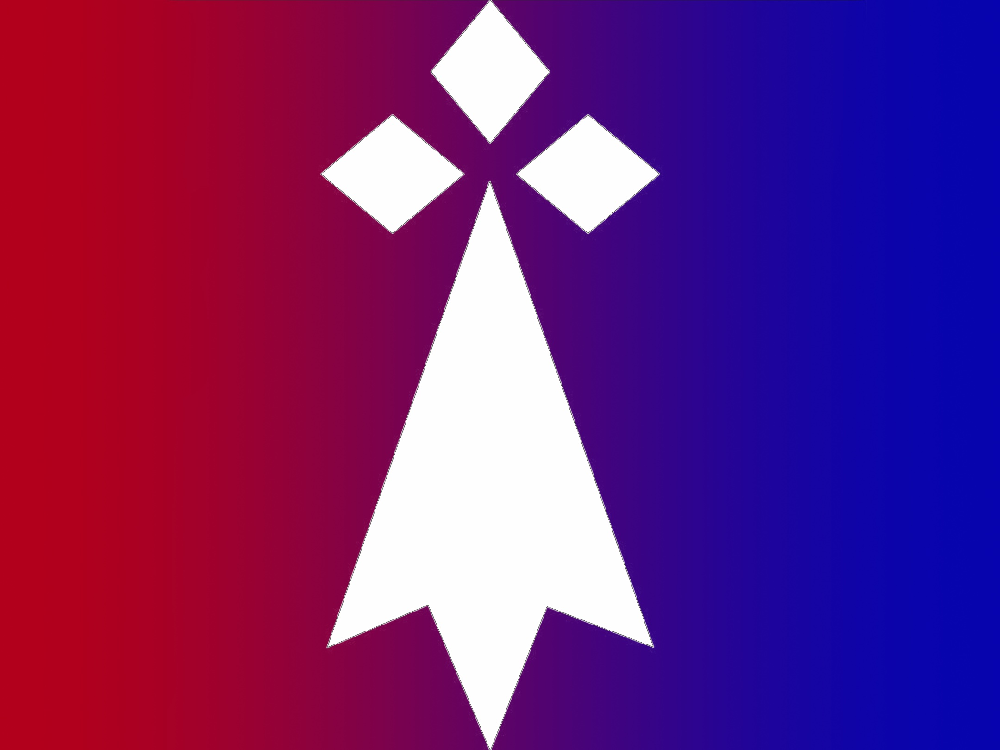
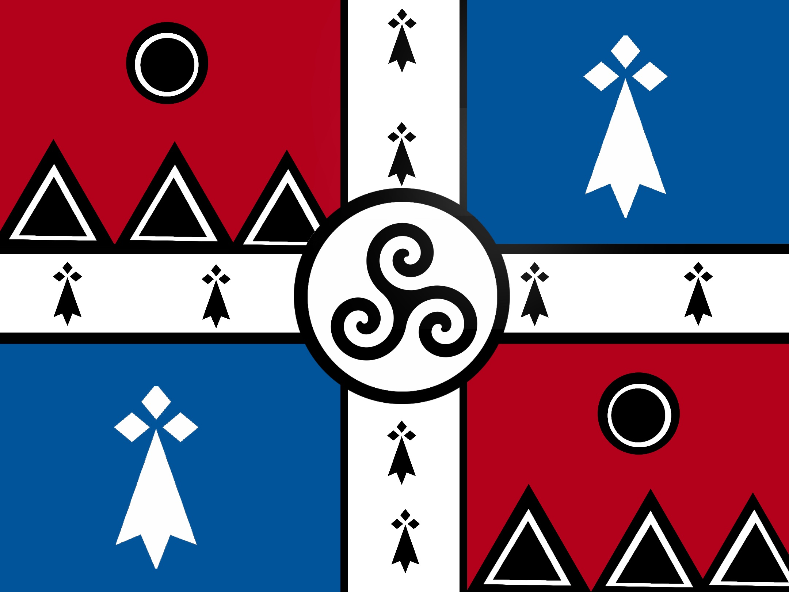

Chargement en cours
Portail Officiel de l'État

Drapeau officiel de la DémocratieNotre nation, nos valeurs, notre avenir
Découvrez les institutions, le chef de l'État et les ministres de la Démocratie.
→ HistoireLes origines et les grandes étapes de la fondation de Kerdoré.
→ ConstitutionLa loi fondamentale de la Démocratie, droits et devoirs des citoyens.
→ DiplomatieRelations extérieures, alliances et traités de la Démocratie.
→ ActualitésCommuniqués officiels, décrets et dernières nouvelles de l'État.
→ CitoyennetéConditions et procédure pour rejoindre la communauté nationale kerdoreine.
→